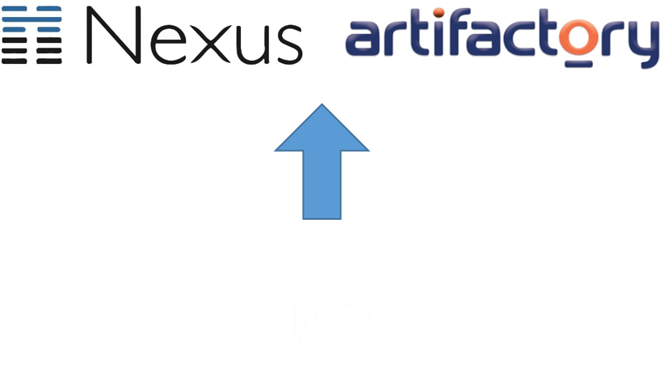
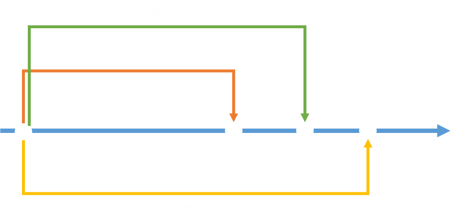

Jenkinsの紹介
Java開発を前提に説明を行います
CIって何?
CIとは
・Continuous Integrationの略
・継続的インテグレーションと呼ばれている

CIのメリット
・ローカル環境で見逃したコーディング規約違反やテストケース漏れを防ぐことができる
・稼働時間の短縮につながる
・手戻りの削減につながる
・品質の維持につながる
利用できるツールは？
どのツールが人気なの？
CIツールの利用率
参考「https://zeroturnaround.com/rebellabs/java-tools-and-technologies-landscape-2016/」
Jenkinsのメリット
・集合知がある
・GUIで設定可能
・定期実行可能
・WebHookの設定が可能
集合知がある
・プラグイン
・参考書
・ネットの情報
Jenkinsのメリット
・集合知がある
・GUIで設定可能
・定期実行可能
・WebHookの設定が可能
GUIで設定可能
Jenkinsのメリット
・集合知がある
・GUIで設定可能
・定期実行可能
・WebHookの設定が可能
ビルド忘れの防止や稼働時間の削減
Jenkinsのメリット
・集合知がある
・GUIで設定可能
・定期実行可能
・WebHookの設定が可能
バージョン管理システム
バージョン管理システムの利用率
参考「https://zeroturnaround.com/rebellabs/java-tools-and-technologies-landscape-2016-trends/」
なぜSVNでなくGitなの？
SVNの悪い点
・バグの有無に関わらず、変更内容をコミットした時点で変更内容が取り込まれる
・レビューをするのに管理簿が必要

ブランチのメリット
・他の開発者の作業の影響を受けることなく、複数の作業を並行して進められる
・ブランチ単位で変更内容を管理できるため、問題発生時の調査が容易
ブランチ戦略
Git Flow

参考「https://hackmd.io/p/BkSkUizJZ#/」
GitHub Flow
参考「http://mateuszmistecki.pl/2017/03/27/github-flow/」
ホスティングサービス
Pull Request(Merge Request)
作業ブランチを対象のブランチにマージするときに利用する
コードの変更点の確認とレビューのやり取りを
まとめて行うことができる
Groovyで書くことができるDSL
Jenkinsfileのメリット
・設定ミスや設定漏れをなくすことができる
・設定変更が容易になった
・レビューが容易になった
・Gitとの相性が良くなった
設定済みのファイルを利用すれば、ジョブを作成する度にGUIで設定を行う必要がない
Jenkinsfileのメリット
・設定ミスや設定漏れをなくすことができる
・設定変更が容易になった
・レビューが容易になった
・Gitとの相性が良くなった
ローカル環境で設定の変更を行うことができる
Jenkinsfileのメリット
・設定ミスや設定漏れをなくすことができる
・設定変更が容易になった
・レビューが容易になった
・Gitとの相性が良くなった
Pull Request機能を利用したレビューを行うことができる
Jenkinsfileのメリット
・設定ミスや設定漏れをなくすことができる
・設定変更が容易になった
・レビューが容易になった
・Gitとの相性が良くなった
Multibranch Pipeline機能を使うことでブランチごとにジョブを作成する必要がない
Jenkinsfileのデメリット
・Groovyを覚える必要がある
・属人性が高い
まとめ
・CIを回すことで、手戻りの削減や開発者の確認漏れを防ぐことが出来る
・JenkinsはCIを回すためのツールの1つである
・学習コストは高いがSVNよりもGitの方が便利
・Jenkinsジョブの設定はGUIではなくJenkinsfileを利用するとGitの恩恵が受ける